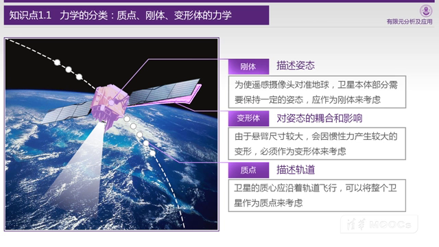
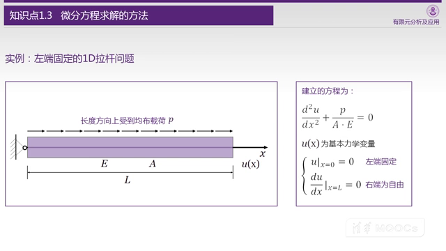
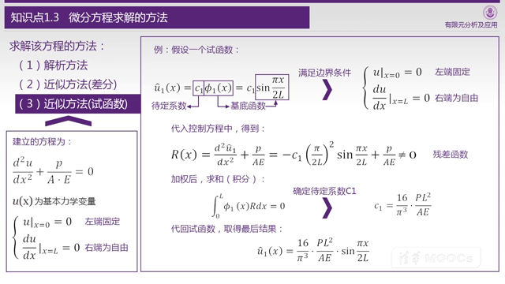
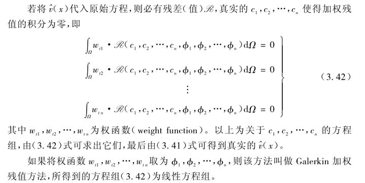

课程概要 & 引论
有限的单元，无限的能力
基本就是说说有什么用，不过需要吐槽一下，那些视频看上去很炫酷，但是在没学过FEM的人看来就平平无奇，也不知道干什么用的。
引论
1.1 力学的分类：质点、刚体、变形体的力学

以卫星为例子，描述轨道只要简化为质点就可以，使用三个坐标就可以标示，如果描述姿态还需要再加3个坐标，如果考虑电池板等柔性元件就更加复杂。
想起一个大佬说的，做有限元分析，不是考虑加什么东西，而是考虑在不影响结果的情况下，可以从现实世界的模型里减去什么。
下面更加具体的分析：
- 质点力学：初中学过的
- 刚体力学（理论力学）：物体形状不变，但是质量分布不能简化为一个点
- 变形体的力学
- 简单形状
- 简单形状，简单组合：材料力学，小变形，形状简单
- 简单形状，复杂组合：结构力学，各种复杂桁架的受理分析（土木应该会经常用吧）
- 复杂形状：弹塑性力学，需要使用微元法分析了，预感这是这门课解决的问题，未必能用解析法解析了。
- 简单形状
1.2 变形体力学的要点
变形体力学的要点，曾老师设计了三个同种材料单拉实验，三个实验的受力-位移曲线都不一样，引导出描述材料中的不变量：弹性模量E的定义：
其中：
- F 为试样受拉力
- A 为试样横截面积
- u 为受拉力F以后，试样的形变量
- L 为试样长度
1.3 微分方程求解的方法

这是我踩的第一个坑，我想了10分钟才明白为什么是u的二阶导数。这里并不是位移-速度-加速度。 首先视频里说“长度上受到均布载荷P”，我里所应当的认为P是压强，应变也就是F/A，其实不是。
我们如果在自由端施加F的拉力，的确小杆子内部的应变处处相等，但是这样的简单载荷是不需要微分方程求解的，所以给定了一个复杂的情况，这里的P的单位其实是N/m，杆子内部的受力不均匀，是一个从左到右逐渐加码的载荷。
所以，应变的大小其实是 ，那么应力就是 ，截面受力 考虑到P是均匀加负荷，所以F的导数等于P，也就是力从0开始逐渐变大到LP（从右到左看的话）。
最后我们得到：
- 整理一下：
- 再整理一下：
得到方程以后的事情就比较顺理成章了，这个微分方程但凡学过高数都会解，唯一的问题是，两次积分会产生两个常数项，第一次产生常数项的时候，要用第二个约束条件带入得到 ，第二个常数项要用第一个约束条件带入得到
接下来讲了两个近似方法，第一个是差分，其实就是折线法（记忆模糊了，应该没错）求解微分方程近似解，说到这个我就兴奋了，除此之外，其实还有龙格库塔之类的一票方法。
老师又说了一个试函数法，看到待定系数和残差方程我就更加兴奋了，你这个是要搞最优化？要不要来个万能函数搞机器学习？

但是下面的步骤开始匪夷所思：

一般这种用一个（组）函数的线性和逼近另一个函数，一般考虑最小二乘法，这里把一个函数和另一个函数乘起来积分等于零（而且还不要求试函数组正交！！）求系数的我还没见过。
经过了解，这个方法叫Galerkin（伽辽金）加权残值法（Wiki 伽辽金法），简单的说，就是用试函数的基函数作为权重函数，就能取得系数。

我参考了这个文章，但是他也没有细说原理，这个应该不重要，如果以后需要再来补充吧。
1.4 关于函数逼近的方式
除了试函数法，还可将函数分成多个小片，逐片拟合。
1.5 针对复杂几何域上的函数表征及逼近
主要就是遇到形状复杂的形状，只能采用分块的方式来做。试函数在这里基本就是废物……
1.6 有限元的核心：针对复杂几何域的分片函数逼近
这里开始涉及到有限元的核心，单元分割，这里举了各种各样的单元，但是实际上不止老师列举的单元，有一个FEMTable的网站专门记录了应该是所有的有限单元的形式。
1.7 有限元发展的历史和软件
略，不过视频出现了一个梗，老师举例了几位FEM的开创者都很长寿，得出了研究有限元可以长寿的结论。 但是曾老师自己享年56岁……老师你为什么要乱立Flag啊哭……
As the plugin is integrated with a code management system like GitLab or GitHub, you may have to auth with your account before leaving comments around this article.
Notice: This plugin has used Cookie to store your token with an expiration.